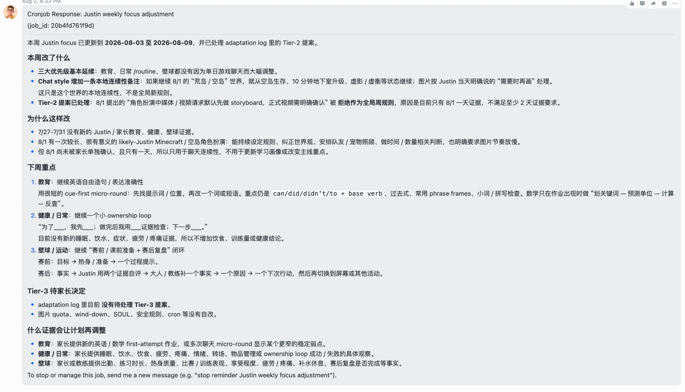

陈沐 · Canopy CEO
255 天，日均约 1 亿。
平均每天 3 个；系统替我开的另有约 7,000 个。
工程师、研究员、写手、分析师、投资人关系、销售运营、行政、家庭助理。相当于 3 个全职的人干了八个半月。
141 条长期记忆、33 个可复用工作流，换模型不丢。
我不想一个人看。想和伙伴们分享、碰撞、一起探索：它是什么，我们该站在哪。
让大家把 AI 用起来，本身就是这个愿景的一部分。
不同在构成，不在能力：可复制、可拥有、没有 stake、可撤销。能力的线每半年移一次，构成不变。
像劳动一样会干活，像资本一样可拥有可复制，但不承担。三个问题：谁拥有、怎么配置、出了事谁负责。
对应四个动词：定、挑、核、担。
它跑在为人设计的老基础设施上。现在的每一种形态都是过渡态，而且过渡得比半年前快。
数学 它是什么：一个采样器
统计 什么时候能信它
哲学 两种判断，什么是智能
神经科学 它是人工神经网络，和人脑的神经网络又不一样
工程 模型原理、LLM、MCP 这些术语
经济学 第四种要素，价值迁移
政治学 权力的再分配
法学 一个新的 being，法律主体性怎么定义
社会学 一个新物种进入组织和社会
宗教 怎么和非人的智能相处
你从哪个圈进来，就以为它是什么。
范式的变化：入口、方式、心力。
从打开软件、开一个聊天窗，到对一个常驻的 agent 说一句话。入口在从应用移到 agent。
一端是几十条不到三十字的判断，一端是跑几小时、几天的长任务。中间"自己动手做"的那段在消失。
注意力成了预算。什么时候看、什么时候不看、什么时候停，变成每天要管理的事。

不再执行细节，整天在想"该做什么"和"怎么让它做好"：计划、拆解、验证。
被推到了最前沿。前面全是不确定性，全人类都没有答案，最前沿的学者预期也是分裂的。
《资本论》说工业化让人异化；现在是去异化。被迫回到只有"人"能做的事情上。
一个新物种进了组织。
几个人自己用，各用各的，经验留在个人手里。
全员放开，野蛮生长。用量上来了。
一个什么都干的 agent。踩坑：权限、context、skill 都难以管理。
每个职能一个，挂在一个人名下，有岗位说明书。
agent 互相派活，人在审批位；权限、日志、复盘写成框架。
每个人能做的任务种类多了。一个人能碰的事，不再由他的专业决定。
这件事不用争。看全部、算全部、写全部，变成了默认。
agency、judgement、taste。招人和评人的标准要跟着换。
知识共享、信息共享、数据沉淀、token 控制。这些是基建，不是福利。
主权不是自建一切。它可能很薄：一叠你拥有格式的文本，规则、记忆、权限表、日志。但没有它，你只是在租。
| 今天的组织 | 有 AI OS 的组织 | |
|---|---|---|
| 信息在哪 | 人的脑子、邮件、几十张表 | 组织自己拥有的一层，一处写、处处读 |
| 谁在看 | 人看全部，看不过来就不看 | agent 看全部，人看需要判断的十几件 |
| 做完算不算做完 | 系统不知道，靠人记得 | 闭环：做完了系统真的知道，没做完它会追 |
| 谁负责 | "我以为他看了" | 写在权限表里：谁能读、能写、永远不能碰；哪一环必须有人认领 |
不平权、意识形态之争、监管、意义的真空。
18.8%：今年 6 月全球劳动年龄人口用过生成式 AI。北方 28.8%，南方 16.2%，差距还在扩大。
64%：新加坡的比例，全球第二。人均用量和 GDP 几乎一条线。
你在漏斗的哪一层，决定你以为 AI 是什么。这间屋子里的人，大多在第三层。
漏斗四层是 Karpathy 10 月 11 日的估算（他自己叫它 napkin math）；18.8% 和 64% 来自微软 AI Economy Institute 2026 年第二季度报告。
这场仗决定的是：第四种生产要素，最后由谁拥有、按谁的规则流通。
对你的影响：主权还是放权，不再只是公司的选择题，也是国家的。你所在的组织，迟早要回答用谁的模型、数据放在哪。
没有联邦 AI 法。去年底总统令设立司法部专班，专门起诉各州的 AI 法。
加州前沿模型透明法今年 1 月生效；科罗拉多的法被改写、推迟到明年。国会多次拒绝全国统一立法。
重点是按风险分级：禁止社会评分和操纵；招聘、信贷、教育、执法算高风险，要事前评估、文档、人工监督；通用模型要透明、守版权，最强的要报事故。罚款最高全球营收 7%。
但今年的"数字综合法案"把高风险条款推迟到 2027 年底、2028 年：竞争力压力下在后退。先立法再推迟，企业不知道按哪一版建。
推广：总理任国家 AI 委员会主席，四大国家任务占 GDP 四成；三年 1 万家企业、10 万名员工；15 万公务员人手一个 agent，配登记簿。
监管：IMDA 的 agentic AI 治理框架；数据、网安、律政各出一份指引；MAS 10 月指引覆盖所有 AI 含 agent；SAFR：每个动作执行前声明、授权、评估，留痕。
网络安全法修订今年 1 月生效，首次把 AI 写进基础法。
生成内容强制标识去年 9 月起；拟人化交互 AI 的管理办法今年出台。不等大法，一个应用一个办法。
底下还有一个原因：监管者自己的 AI 认知是代际问题。定规则的人，多数没有亲手用过 agent。
输入输出被接走之后，同样的产出不再需要同样的小时数。先是年轻人，高暴露岗位的就业已经落后 19%。
工业化用工作定义了人；工作一松，"我是谁"的问题回来了。去异化的另一面，是意义的真空。
真空不会空着。开源对闭源、加速对减速、拥 AI 对反 AI，都已经是部落。人会用身份填补工作留下的位置。
对你的影响：心力的管理、判断和品味、一份 stake，三样都是对这个真空的回答。
| 关注什么 | 谁在盯 | 对你的影响 |
|---|---|---|
| agent 从单个走向成群：任务从几小时到几周 | Karpathy：外面只看到预告片，里面已是上千个 agent 协作几周 · Mollick：swarm 自己组织起来了 · Altman：常驻 agent 成了产品 | 工作入口变成对 agent 说一句话；你的位置移到定义和验收，碎片化和长程两极增加 |
| 验证成了瓶颈，也是最稀缺的资源 | Karpathy：能验证的就会被自动化 · MIT Catalini 等：自动化比核验便宜得快，缺口叫 Measurability Gap · Nadella：把模型当有权限的内部人，要独立审计和紧急刹车 | 把判断写下来：什么算做完、谁核验、谁担责。每个 agent 动作执行前要有检查点 |
| 持续学习和记忆：下一个拐点，也是新的锁定战场 | Hassabis、Sutskever、Karpathy：缺的是持续学习，没人交付 · LeCun、李飞飞、Sutton：要世界模型和经验 · Dwarkesh：明年年中六成仍靠上下文 | 模型几个月可互换，平台转而留住你的记忆。规则和记录自己持有，换供应商时问"我的上下文能不能带走" |
| 劳动力市场先从年轻人和可编码的知识开始分化 | Brynjolfsson：高暴露岗位年轻人就业落后 19%，生产率起飞已可见 · Amodei：通用劳动替代品，财富集中 · Lütke：先证明 AI 做不了再加人 | 经验从"知道怎么做"转成"知道什么算好"。出路是拿到一个对结果负责的位置 |
| 权力：主权、开源、算力和新的制度 | 黄仁勋：每个国家要有自己的 AI · Hadfield：agent 经济需要身份、责任、登记制度 · Amodei：2028 年美中两种剧本 · Altman：对齐没解决 | 主权还是放权，不只是国家的选择题，也是你所在组织的。合同先于法律，边界得自己定 |
Mu 个人观点：都有各自的背后利益，屁股决定脑袋。
| 10:00–10:40 | 开场分享：AI 对个人、企业与社会的影响 | Mu |
| 10:40–11:00 | 从文科生到 AI Builder：怎么做出不同的 AI Agents | Derek |
| 11:00–11:10 | 工程背景小神的 AI 历程：工程师怎么用 AI | Qihao |
| 11:10–11:30 | 当 AI 开始自主工作：从 LLM 到 Agent Harness | Qihao |
| 11:30–11:40 | Codex 导航指南：认识你的 AI 工作台 | Derek |
| 11:40–12:10 | The AI Challenge：从学习到实战（尽调挑战赛规则） | Derek |
| 12:10–12:30 | Grill Me：先想清楚，再让 AI 动手 | Derek |
| 12:30–13:30 | Lunch & Plan：边吃边想，从 Why 到 How | Derek、Qihao、Coco、Suxian |
| 13:30–17:30 | From Plan to Product：AI 实战工作坊，打造完整的尽调报告 | 全体 |
| 16:30–16:50 | 小组讨论与内部选拔 | Derek |
| 16:50–17:30 | The Grand Showcase：让每一个好想法被看见 | Derek |
| 17:30–17:55 | 从个人生产力革命，上升到组织智能 | Qihao |
| 17:55–18:00 | Beyond the Workshop：从 AI 使用者到 AI 构建者 | Derek |
下午的赛题就是今天上午说的事：生成交给 AI，判断留给你，最后展示"做完了系统真的知道"。